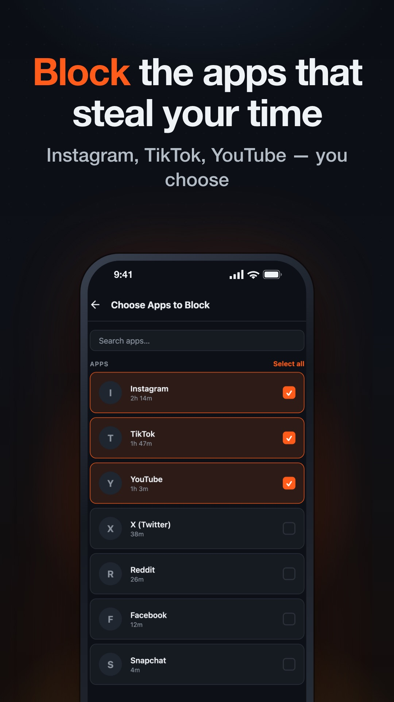

Bloquer Instagram tant que tu n’as pas fait tes pompes
Instagram, c’est souvent la première appli qu’on veut bloquer, et c’est une appli difficile à bien bloquer. Elle apparaît rarement comme une seule grosse session dans ton rapport de temps d’écran. Elle apparaît comme quarante petites : un coup d’œil à une story, une réponse à un message, puis vingt minutes de Reels que tu n’avais jamais prévu d’ouvrir.
Cette page explique pourquoi Instagram est si fort à ce jeu-là, et comment tout régler pour que l’ouvrir te coûte dix pompes au lieu d’un tap.
Pourquoi on a tant de mal à lâcher Instagram
La plupart des applis qui distraient font une seule chose. Instagram en fait quatre, et chacune te passe à la suivante :
- Les messages privés te donnent une vraie raison d’ouvrir l’appli. Quelqu’un t’a envoyé un truc, et répondre, c’est la moindre des politesses.
- Les stories sont courtes, défilent toutes seules, et les petits cercles en haut te disent qu’il y en a toujours une que tu n’as pas vue.
- Les Reels sont à un onglet de là et ne s’arrêtent jamais.
- Le fil et Explorer, c’est ce qui reste quand les Reels commencent à tourner en boucle.
Le problème, c’est cette chaîne. Tu n’ouvres presque jamais Instagram dans l’idée de scroller une demi-heure. Tu l’ouvres pour une vraie raison, souvent un message, et l’appli est conçue pour transformer cette petite course en session. Un bloqueur qui dit « pas d’Instagram aujourd’hui » t’enlève aussi la petite course, et tu finis par le désactiver. Ce qui marche mieux, c’est de mettre un petit prix fixe à l’entrée, puis de laisser le solde s’écouler pendant que tu es dedans.
Ce que les pompes font et qu’un minuteur ne fait pas
Instagram a une limite quotidienne intégrée, et ton téléphone a des limites d’applis aussi. Les deux t’arrêtent avec un rappel que tu peux ignorer. À 23 h, l’ignorer ne coûte rien, alors tu l’ignores.
Avec des pompes, passer le blocage coûte quelque chose que tu dois payer avec ton corps. C’est un petit prix, mais il est réel. Certains soirs, tu vas te mettre au sol, en faire dix et répondre à tes messages. D’autres soirs, tu vas regarder l’écran de blocage et te rendre compte que tu n’avais pas tant envie d’Instagram que ça. Dans les deux cas, ouvrir l’appli a été une vraie décision.

La configuration sur iPhone
Sur iPhone, seul Apple peut bloquer une appli, donc HonorFit passe par Temps d’écran pour le verrou.
- Ouvre HonorFit, touche Continuer à l’étape Temps d’écran, puis accepte la demande d’Apple.
- Touche Applis à bloquer, puis Ouvrir le sélecteur. C’est le sélecteur d’Apple lui-même. Ouvre la catégorie Réseaux sociaux et coche Instagram. Tu peux cocher toute la catégorie à la place, mais si tu ne veux bloquer qu’Instagram, choisis juste l’appli.
- Ferme le sélecteur. Instagram affiche maintenant l’écran de blocage d’Apple jusqu’à ce que tu gagnes du temps.
- Pour entrer, fais tourner les roues de répétitions dans HonorFit, touche Valider, et le blocage se lève pour les minutes gagnées.
Apple garde tes choix privés : il donne à HonorFit un jeton anonyme pour chaque appli, pas son nom. HonorFit peut donc verrouiller Instagram sans savoir quelle appli tu as choisie.
La configuration sur Android
- Ouvre HonorFit. Sur la carte Autorisations requises, touche Autoriser à côté de Accès aux données d’utilisation et active-le pour HonorFit, puis fais pareil pour Superposition sur d’autres applis. La première permet à HonorFit de voir quelle appli est à l’écran, la deuxième lui permet d’afficher l’écran de blocage.
- Dans les Réglages, sous Fiabilité en arrière-plan, règle l’utilisation de la batterie de HonorFit sur Non restreinte. Certains téléphones arrêtent les applis en arrière-plan pour économiser la batterie, et si ça arrive à HonorFit, tes applis bloquées se débloquent sans prévenir.
- Touche Applis à bloquer. Tu vois tes applis installées, avec en haut celles que tu as utilisées ces dernières 24 heures. Instagram y sera presque à coup sûr. Coche-la.
- La prochaine fois que tu ouvres Instagram sans temps en banque, tu verras « Instagram est bloquée ». Touche Gagner du temps 💪 pour aller direct aux roues de répétitions.
Un taux qui colle à Instagram
Par défaut, une pompe rapporte une minute. Pour Instagram, je laisserais ça comme ça, au moins la première semaine :
- 10 pompes = 10 minutes. Ça suffit pour lire tes messages, y répondre et regarder les stories qui comptent pour toi.
- Garde un petit solde. La version gratuite garde jusqu’à 2 heures en banque, mais rien ne t’oblige à tout utiliser. Gagner dix minutes à la fois t’évite de stocker une heure de Reels dès le matin.
- Le chrono ne tourne que dans Instagram. Si tu réponds à un message puis passes à l’appareil photo, le solde arrête de diminuer. Pas besoin de te presser.
Si au bout d’une semaine tu finis encore au fond des Reels, augmente le prix. Tu peux changer ce que rapporte chaque répétition dans les Réglages, par exemple passer les pompes à 30 secondes chacune. Il y a aussi le mode difficile, qui divise chaque répétition par deux, et le mode malade, qui la double pour les jours où tu n’es pas en forme. Tout ça est gratuit. Les squats et les abdos rapportent 30 secondes chacun par défaut, donc c’est un moyen facile de rendre une session plus chère sans toucher aux réglages.
N’oublie pas les voisins d’Instagram
Fais attention à ça pendant ta première semaine. Quand Instagram devient plus dur à ouvrir, l’habitude se déplace vers l’appli d’à côté. Pour certains, c’est Threads ou Facebook, pour d’autres, c’est le site d’Instagram dans un navigateur. Si tu vois ça arriver, coche aussi l’appli voisine.
HonorFit ne peut verrouiller que des applis. Il ne peut pas te suivre sur instagram.com dans un navigateur. Si c’est là que tu atterris, les limites de sites web intégrées à ton téléphone s’en chargeront.
Pourquoi je n’ai pas mis de caméra
Certains bloqueurs avec du sport comptent tes répétitions avec la caméra frontale. Pas HonorFit. Tu fais défiler une roue pour dire combien tu en as fait, et c’est tout. Du coup, c’est rapide à faire dans une cuisine ou au bureau, et il n’y a aucune autorisation caméra. Ça veut aussi dire que tu peux tricher. Pour moi, ce n’est pas grave : la personne que tu tromperais, c’est celle qui a installé un bloqueur parce qu’elle voulait faire plus de pompes. J’en parle plus en détail dans un bloqueur d’applis sans caméra ni IA.
HonorFit Blocker verrouille Instagram, ou n’importe quelle autre appli de ton choix, jusqu’à ce que tu la mérites avec des pompes. Gratuit sur iPhone et Android. Système de l’honneur, pas de caméra, pas d’IA, et rien ne quitte ton téléphone.